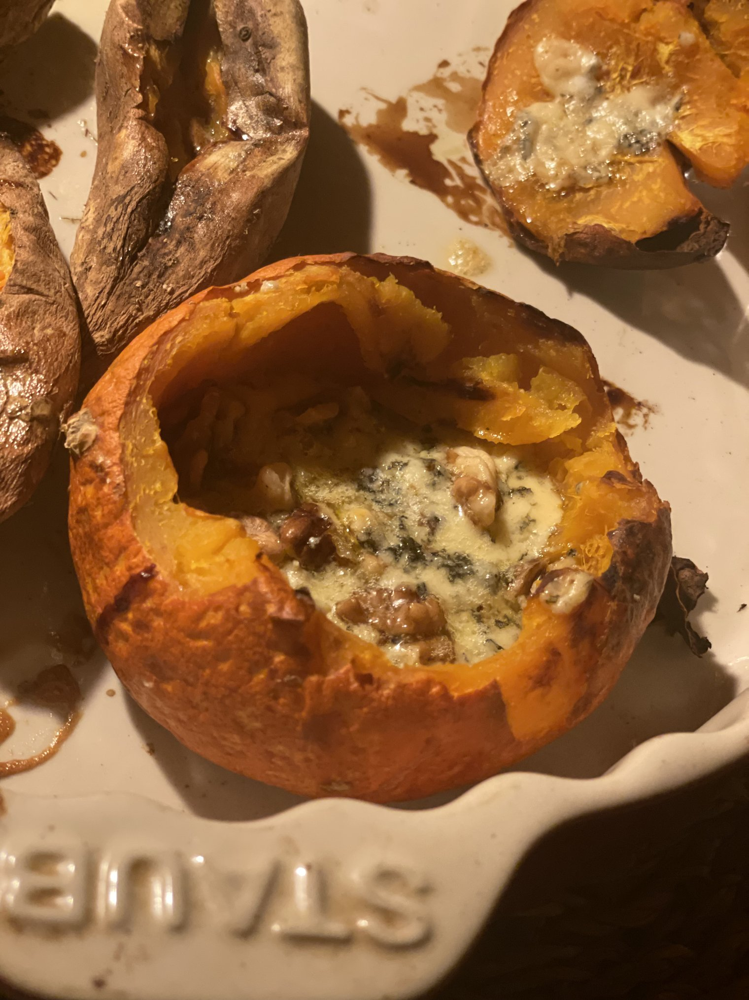

Calabaza con gorgonzola y nueces al horno
Ingredientes
2×
- 1 calabaza pequeña (tipo potimarron)
- 100 g de gorgonzola
- 1 puñado de nueces
- aceite de oliva

Preparación
Paso 1
Cortar la parte de arriba de 1 calabaza pequeña (tipo potimarron) y vaciar las semillas.
Paso 2
Rellenar con 100 g de gorgonzola y 1 puñado de nueces troceadas, salpimentar y poner un chorrito de aceite de oliva.
Paso 3
Hornear 50min a 200ºC, hasta que la calabaza esté tierna.
Resumen
1 calabaza pequeña (tipo potimarron)
Cortar vaciar
100 g de gorgonzola
1 puñado de nueces
aceite de oliva
Rellenar
Hornear 200ºC